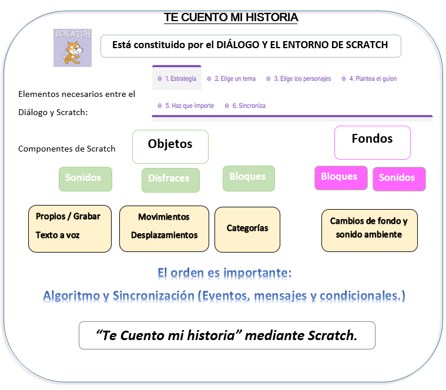
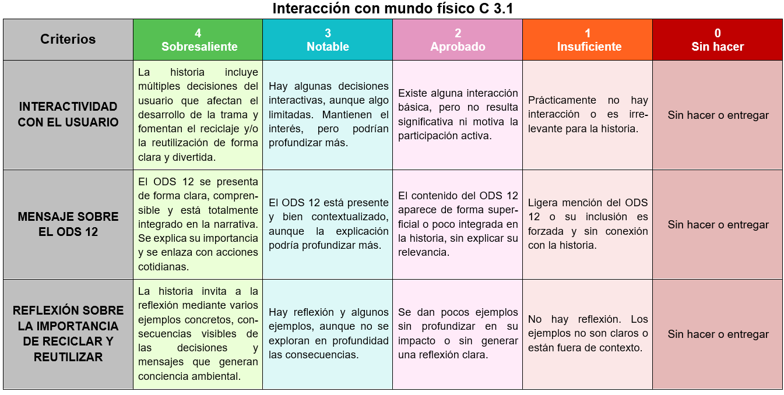
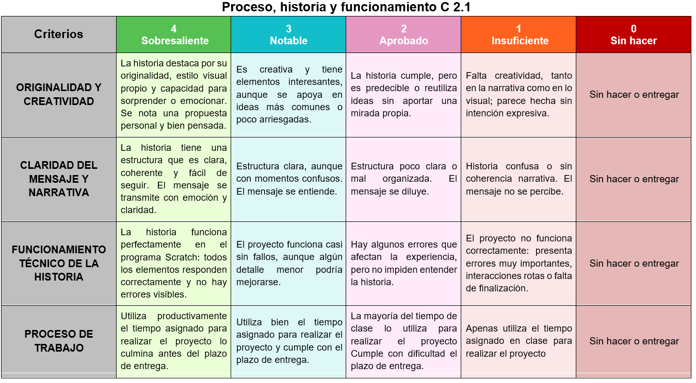
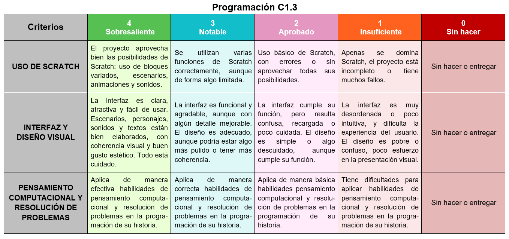

Una vez hemos terminado la tarea, es momento de pararnos a pensar sobre qué hemos aprendido, con el programa Scratch.
Una vez hemos terminado la tarea, es momento de pararnos a pensar sobre qué hemos aprendido, con el programa Scratch.
Espero que te haya quedado más claro qué es un diálogo y hayas reconocido el entorno de escritorio sobre el que vamos a trabajar de ahora en adelante, de qué partes se componen, cómo interactúan entre ellas y cómo es el resultado de la programación.
El siguiente gráfico puede servir para ver qué hemos trabajado en la tarea.

Autoevaluación: ¿Qué has aprendido al realizar este reto?
- Actividad
- Nombre
- Fecha
- Puntuación
- Notas
- Reiniciar
- Imprimir
- Aplicar
- Ventana nueva
| Excelente | Bueno | Aceptable | Bajo | |
|---|---|---|---|---|
| Comprensión de los conceptos básicos de la programación en bloques | Demuestra una comprensión completa y capacidad para aplicar los conceptos de programación en bloques (4) | Demuestra una buena comprensión y capacidad para aplicar los conceptos de la programación en bloques (3) | Demuestra una comprensión básica y capacidad para aplicar los conceptos de la programación en bloques (2) | No demuestra capacidad para comprender ni aplicar los conceptos de programación en bloques (1) |
| Utiliza los diferentes bloques y comandos de Scratch para programar personajes y acciones | Utiliza de manera efectiva y creativa una amplia variedad de bloques y comandos en Scratch (4) | Utiliza de manera correcta una variedad de bloques y comandos en Scratch (3) | Utiliza de manera básica una limitada variedad de bloques y comandos en Scratch (2) | No utiliza de manera adecuada los bloques y comandos de Scratch (1) |
| Calidad y originalidad de la historia interactiva | La historia interactiva es de alta calidad, original, está bien estructurada y resuelve de manera efectiva un problema o situación del mundo real (4) | La historia interactiva es de buena calidad, tiene un estructura coherente y resuelve un problema o situación del mundo real (3) | La historia interactiva es básica, poco original o mal estructurada y aborda superficialmente un problema o situación del mundo real (2) | La historia interactiva tiene problemas de calidad, falta de originalidad y de estructura y no resuelve de manera adecuada un problema o situación del mundo real (1) |
| Habilidades de pensamiento computacional y resolución de problemas | Aplica de manera efectiva las habilidades de pensamiento computacional y resolución de problemas en la programación de su historia (4) | Aplica de manera correcta las habilidades de pensamiento computacional y resolución de problemas en la programación de su historia (3) | Aplica de manera básica las habilidades de pensamiento computacional y resolución de problemas en la programación de su historia (2) | Tiene dificultades para aplicar las habilidades de pensamiento computacional y resolución de problemas en la programación de su historia (1) |
| Trabajo en equipo y colaboración | Trabaja de manera efectiva en equipo y colabora activamente durante todo el proyecto aportando ideas de manera constructiva (4) | Trabaja de manera adecuada en equipo y colabora en la mayoría de las actividades del proyecto (3) | Trabaja en equipo de manera básica y colabora de manera limitada en algunas actividades del proyecto (2) | Tiene dificultades para trabajar en equipo o no colabora ni aporta ideas durante el proyecto (1) |
| Aplicación de prácticas de consumo sostenible en su entorno cercano | Integra completamente estrategias de consumo y producción responsable, inspirando a otros a hacer lo mismo (4) | Aplica de manera efectiva varias estrategias sostenibles en su día a día (3) | Aplica de forma limitada algunas estrategias de consumo responsable en su entorno cercano (2) | No aplica ni identifica estrategias de consumo responsable en su entorno cotidiano (1) |
Rúbricas para evaluar el proyecto



Motus dice ¿Te ha resultado curioso aprender a programar?
¿Te ha motivado lo que has aprendido en este reto? ¿Te has sentido bien cuándo te has enfrentado a este reto? ¿Te sientes parte de tu grupo? ¿Te satisface el resultado final del programa que has realizado?
Cuando tenemos que hacer alguna actividad podemos tener dudas sobre si seremos capaces de hacerlo. Y aprender todo lo que has aprendido no era nada fácil. Seguro que algunos bloques te han resultado sencillos de ejecutar y otros han sido más complicados, esto acaba de empezar; estoy seguro de que con tu fuerza de voluntad y con la ayuda de tus compañeros, compañeras y profes has conocido muchas cosas nuevas.
Recuerda que dependiendo de lo que dominemos lo que tenemos que hacer, tendremos que usar unas estrategias u otras. Y si es algo que nos cuesta mucho trabajo siempre tenemos a alguien que nos puede ayudar como una compañera o compañero, o los profes.
Pero, si ya has llegado aquí tengo que felicitarte por todo lo conseguido ¡Enhorabuena!
Además, has conseguido contar tu historia a un compañero o compañera del aula, a la vez que has conocido el entorno de programación de Scratch. ¡Seguro que te servirá para tu futuro!
Te doy un pequeño consejo: reflexiona sobre cómo podrías mejorar ante las próximas dificultades que puedan surgir.
NOS VEMOS EN EL SIGUIENTE RETO